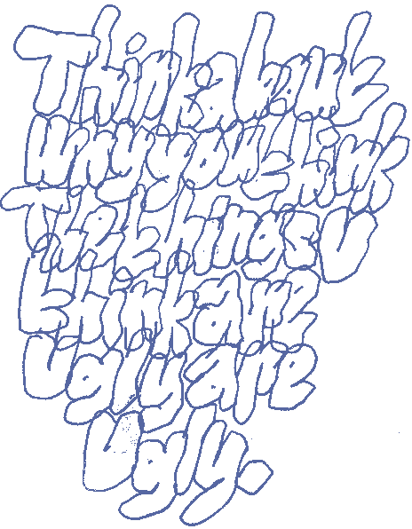

about
art
"art"
silica
bicycle
etc
< newer
older >

you shouldn't be seeing this!
© 2020 - 2021 ellory erecius


 - 2020; digitized ink and acrylic")
 - 2020; digital")


 - 2020; ballpoint, acrylic, and paper towel")


 - 2020; digitized ink")
 - 2020; digitized marker")